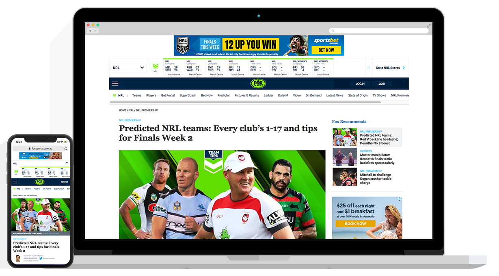

Word of mouth has been the longest standing form of getting information from one person to another on record. As time has gone by, talking has led to writing and writing has led to news, which like everything today, has moved online. Even though it's the oldest form of finding out the where, when, what, and how of sports articles are still prominent sources for people to get thier information on their favorite teams. Especially those who enjoy reading, online articles favor those literal wishes and bring everything that has happened or is about to on to a viewer's screen.

Post MSUFB SG